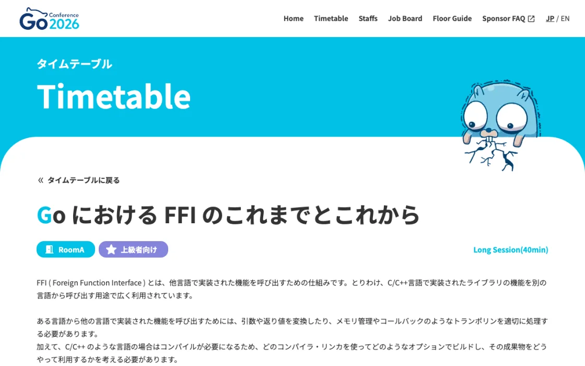

uintptr になるF、型名に T が付くuintptr（char * も sqlite3 * も）uintptr を struct のポインタに変換して、フィールドを読むFflags は 20、全体は 56 byte）flags の MEM_Int / MEM_Real などを見て、どのメンバとして読むかを決める[0]T のフィールドはサイズ 0。全員が offset 0 に並ぶFr float64 の 8 byte だけu は sqlite3_value の先頭にあるので offset の加算がないunsigned x:1 は 1 bit のフィールド。FROM 句の要素の属性を 1 つの整数に詰めるflags uint32 と const isSubquery = 1 << 2 の組み合わせに当たるF__ccgo4 uint32 1 つにまとめられる+24 で fg、+4 で整数。読むときは mask して右シフト、書くときは libc のヘルパーが対象 bit だけを更新するuintptr にして保持する真似はしないuintptr で持つuintptr で持ち、func 型に変換して呼ぶlibc.VaList でまとめて渡すtls.Alloc で確保するconst になるa は柔軟配列メンバ。ヘッダの直後に要素が続くTSrcList には a がない（要素数が実行時に決まる）a[i] は「先頭 + 8 + i × 80」のアドレス計算になる[0]uint64 は、サイズ 0 のまま 8 byte のアラインメントだけを補う